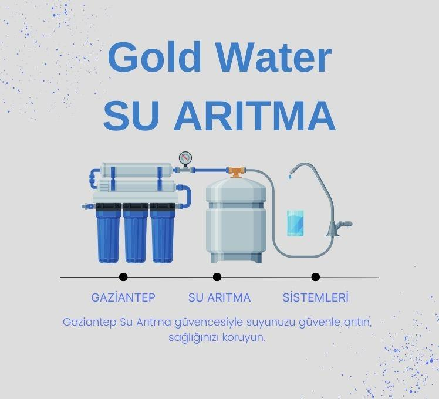
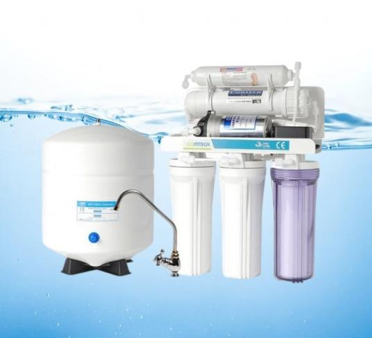
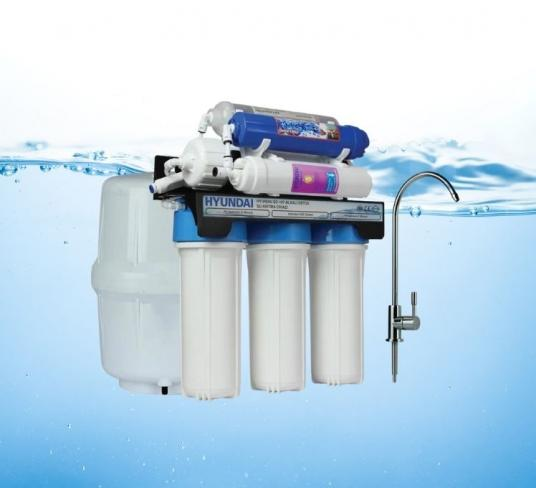

-
01
DESTEK HATTI
0 (541) 515 30 10 -
02
SERVİS TALEP FORMU
TALEP GÖNDER

Hakkımızda
Neden Bizi Seçmelisiniz.
GÜVEN Su Arıtma Sistemleri | Gaziantep olarak, temiz, sağlıklı ve güvenilir suyun herkesin hakkı olduğuna inanıyoruz. Bu anlayışla yola çıkarak, evsel ve endüstriyel su arıtma çözümleri konusunda uzmanlaşmış bir ekip ile siz değerli müşterilerimize hizmet vermekteyiz. Gaziantep ve çevresinde ihtiyaçlarınıza özel, yüksek teknolojiye sahip su arıtma sistemleri sunarak sağlığınızı ve çevrenizi koruma hedefiyle çalışıyoruz.
Firmamız, sektördeki gelişmeleri yakından takip ederek sürekli yenilikçi çözümler sunmayı misyon edinmiştir. Ürün yelpazemizde; ev tipi su arıtma cihazlarından endüstriyel arıtma sistemlerine kadar geniş bir seçenek bulunmaktadır. Bu cihazlar, suyunuzdaki zararlı maddeleri etkili bir şekilde filtreler ve size en doğal haline en yakın suyu sunar.
Müşteri memnuniyeti bizim için önceliklidir. Satış öncesi detaylı bilgilendirme, kurulum sırasında profesyonel destek ve satış sonrası hizmetlerimizle sizlere kesintisiz bir hizmet sağlamaktayız. Her ihtiyaca uygun çözümlerimizle, evlerde temiz içme suyu sağlarken işletmeler için verimliliği artıran sistemler geliştiriyoruz.
Sağlıklı bir yaşamın temelini suyun kalitesinin oluşturduğu bilinciyle, GÜVEN Su Arıtma Sistemleri | Gaziantep olarak yanınızdayız. Size en uygun su arıtma sistemini sunmak ve beklentilerinizi aşmak için buradayız. Daha temiz bir gelecek için bizimle iletişime geçin!
MERAK ETTİKLERİNİZ? Sıkça Sorulanlar
Su arıtma cihazları, musluktan gelen sudaki kirleticileri, zararlı kimyasalları, bakterileri ve diğer zararlı maddeleri filtreleyerek daha temiz ve sağlıklı içme suyu sağlar.
Su arıtma cihazları, genellikle aktif karbon filtreleri, ters ozmoz (RO) sistemleri, UV ışık sterilizasyonu ve mineral ekleme filtreleri gibi çeşitli filtreleme yöntemleri kullanarak suyu temizler.
Evet, su arıtma cihazlarının filtreleri belirli bir kullanım süresinin ardından değiştirilmelidir. Filtre değişim süresi, cihazın modeline ve kullanım yoğunluğuna göre değişir, ancak genellikle 6 ayda bir değişim önerilir.
Su arıtma cihazı seçerken, cihazın arıtma kapasitesi, kullanılan filtreleme teknolojisi, suyunuzdaki kirleticilere karşı etkinliği ve bakım gereksinimlerini göz önünde bulundurmalısınız.
Su arıtma cihazlarının kurulumu genellikle profesyoneller tarafından yapılmalıdır. Kurulum işlemi, cihazın türüne göre değişiklik gösterse de uzman ekiplerimiz, hızlı ve güvenli bir şekilde kurulum sağlar.




ÇALIŞMA SÜRECIMIZ Süreç
İhtiyaç Analizi ve Danışmanlık
Müşterilerimizin su arıtma ihtiyaçlarını belirlemek için detaylı bir analiz yapıyoruz. Bu aşamada, suyun kalitesini ve ihtiyaç duyulan arıtma yöntemlerini belirlemek için sizlere profesyonel danışmanlık hizmeti sunuyoruz.
Kurulum ve Sistem Entegrasyonu
Seçilen su arıtma cihazlarını yerinde kuruyor ve sistemin doğru şekilde çalıştığından emin oluyoruz. Bu adımda, cihazlarınızın tüm bağlantıları yapılır ve suyunuzun arıtma kapasitesi optimize edilir.
Bakım ve Destek Hizmeti
Kurulumun ardından, cihazların verimli bir şekilde çalışması için düzenli bakım ve filtre değişim hizmeti sağlıyoruz. Ayrıca, her türlü arıza ve sorun için 7/24 destek sunarak cihazınızın sorunsuz çalışmasını garanti altına alıyoruz.
Müşteri Yorumları
Aldığımız Geri Dönüşler
Su Arıtma
Servis Talep Formu
HABERLER Son Makaleler ve Haberler
Sağlıklı Su Tüketiminin Önemi ve Su Arıtma Cihazlarının Rolü
Su, yaşamın temel taşıdır. Vücudumuzun %60’ını su oluşturur ve bu da suyun sağlığımız için ne kadar kritik olduğunu gözler önüne ...
Su Arıtma Cihazlarında En Sık Görülen Sorunlar ve Çözümleri
Su arıtma cihazları, musluktan gelen suyu temizleyerek sağlıklı içme suyu sağlamak için önemli bir araçtır. Ancak, tıpkı diğer ev aletle...
Musluktan İçilen Suyun Kalitesini Artırmak: Su Arıtma Sistemleri ile İlgili Bilmeniz Gerekenler
Musluktan içilen su, çoğu evde günlük hayatın vazgeçilmez bir parçasıdır. Ancak, suyun kalitesi her zaman beklentileri karşılamayabilir. K...
Su Arıtma Cihazı Filtre Değişimi Ne Zaman Yapılmalı ve Neden Önemlidir?
Su arıtma cihazları, sağlıklı ve temiz içme suyu sağlamak için filtre sistemleri kullanır. Ancak filtrelerin etkinliğini koruyabilmesi için...
Evde Su Arıtmanın Faydaları: Sağlıklı Suya Kolay Ulaşmanın Yolu
Günümüzde temiz ve sağlıklı içme suyuna ulaşmak her zamankinden daha önemli. Su kaynaklarının kirliliği ve musluk suyunda bulunabilecek kl...
Su Arıtma Cihazı Alırken Nelere Dikkat Edilmeli? En Doğru Seçimi Yapın!
Günümüzde sağlıklı ve temiz içme suyuna ulaşmak herkes için önem arz ediyor. Musluktan gelen suyun kalitesi her zaman istenilen düzeyde olm...